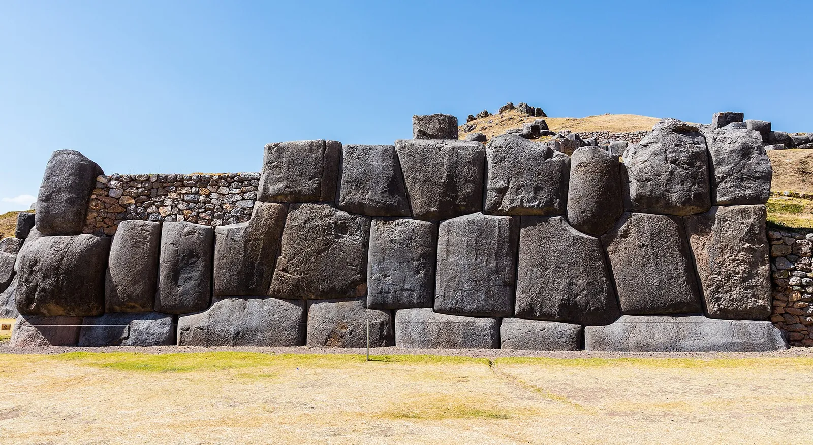

Sacsayhuamán: The Inca Fortress Built With Impossible Stones

Image: Diego Delso, CC BY-SA 4.0, via Wikimedia Commons
High on a hill above the old city of Cusco, in Peru, stand three great stone walls. They are 3,701 meters (12,142 feet) above the sea. The air is so thin up there that a modern tourist has to stop and gasp for breath. For more than five hundred years, people have looked at these walls and asked how they were made.
The place is called Sacsayhuaman. You say it SACK-sy-wuh-mun. In Quechua, the language of the Inca, it is written Saqsaywaman, and it means “fortress of the royal falcon.” Spanish writers who saw it in the 1500s were amazed that people had built it.
The three walls run in a zigzag line. The biggest stone is estimated to weigh between 128 and almost 200 tons. A quarry is a place where stone is cut from the ground. Some stone is thought to have come from a quarry about 35 kilometers away, across rough mountain land. The builders used no mortar, the paste that holds bricks together. Yet the stones fit so tightly that a single sheet of paper will not fit between many of them.
The Inca builders had no wheels and no iron tools. They had no written language. They had no animals that could pull such weights. The llama was the largest farm animal in the Andes mountains, and it can carry only a light load. Still, the Inca raised some of the greatest giant-stone walls in the Americas.
Sacsayhuaman sits on a steep hill at the northern edge of Cusco. It is about 2 kilometers from the main square of the city. Cusco was the capital of the Inca Empire. The Inca called their empire Tawantinsuyu, or “Realm of the Four Parts.” It was the largest empire in America before Columbus arrived. At its largest, it reached from modern Colombia to Chile.
The Inca did not have a written language, so they passed their history on by speaking. Spanish writers later wrote these stories down. They say that the building began under Pachacuti Inca Yupanqui, who ruled from 1438 to 1471. He was the emperor who turned a small kingdom into a huge empire. The work went on under the next rulers, Topa Inca Yupanqui and Huayna Capac.
The work took many years. The Spanish writer Pedro Cieza de León wrote that the provinces of the empire were to send 20,000 workers. The site holds the famous zigzag walls, and also temples, storehouses, water channels, and other buildings. In 1983, UNESCO made Sacsayhuaman a World Heritage Site, as part of the City of Cusco.
The three great walls run side by side, one above the other. Their zigzag line makes many sharp corners. The longest wall is about 400 meters (1,312 feet) long. In some places the walls are about 6 meters (20 feet) tall. People have argued about the purpose of the zigzag shape for a long time.
One common idea is that the zigzag helped in a fight. Defenders on the walls could shoot at attackers from several directions at once. Anyone who tried to climb the walls could be hit from the side.
The shape may also help in an earthquake. The Andes have many earthquakes. So some people think the zigzag and the locked stones helped keep the walls standing.
The stonework is what makes Sacsayhuaman so special. At other Inca sites, the stones are cut like bricks and laid in even rows. Here the builders used a style called polygonal stonework. A polygon is a shape with many sides. Each stone was carved into its own odd shape, and it locks exactly into the stones around it.
These are huge blocks. Some have 10, 12, or even more sides. They fit together like the pieces of a giant jigsaw puzzle. More than 500 years have passed, and earthquakes have shaken them. Even so, a sheet of paper will not fit into many of the joints.
The largest stones are giants. Experts estimate that the largest block weighs between 128 and almost 200 tons. These are some of the largest stones used in Inca buildings.
So here is the question that has troubled experts for centuries. It sounds simple. How did the Inca move and place stones of up to 200 tons? They had no wheels for transport, no iron tools, and no heavy machines. A llama is no help at all with a block that heavy.
The usual answer is that huge teams of people did the work. Old writers describe such teams. One is Garcilaso de la Vega, who lived from 1539 to 1616. He had an Inca mother and a Spanish father. He wrote down stories told by his Inca relatives in his 1609 book, Royal Commentaries of the Incas.
The chroniclers wrote that large crews dragged stones with ropes made of leather and plant fiber. Some wrote of logs and earth ramps. Their numbers may be too big. But the general method fits what we know about how the Inca organized work.
The Inca Empire had a work system called the mita. Under the mita, men of working age had to work for the state for part of each year. It was a kind of tax, paid in work and not in money.
The builders may have used other methods too. They may have built ramps of earth up to the top of the wall as it grew. They may have put log rollers under the stones and used wooden beams as levers. Nobody knows for sure which methods they used.
In the 1980s, a professor named Jean-Pierre Protzen studied Inca stonework. He taught architecture, the art of designing buildings, at the University of California, Berkeley. He cut stones in an Inca quarry to test how it was done. His work suggests how the Inca could have made joints that looked impossible.
The method was to shape a stone, test it, and shape it again. Workers put the stone roughly in its place. They marked the points where it touched the stones next to it. Then they took it away. They pounded down the high spots with hammer stones, which are harder rocks used as tools. Then they put the stone back to check the fit.
They did this again and again, sometimes dozens of times, until the stone sat perfectly. Protzen’s work suggests that the “impossible” joints did not need any unknown tools. They needed patience, skill, and a huge amount of human work. He did not fully explain how the biggest stones were moved.
Inca stonework is also good at staying up. Big earthquakes hit Cusco in 1650 and 1950. In 1650, most Spanish-style buildings in the city fell, while many Inca walls stood. In 1950, about half of Cusco’s buildings were damaged. A study found that Inca buildings suffered much less.
Some experts think the reason is the way the Inca built. The stones fit closely, and their own weight holds them in place. So the walls may move a little during an earthquake and not crack. Others point out that the direction of the shaking also mattered.
Sacsayhuaman also has a place in the story of the Spanish conquest of Peru. The Spanish took Cusco in 1533. In 1536, Manco Inca Yupanqui, the ruler the Spanish had put in place, rose up against them. He surrounded Cusco with a huge army. Estimates of its size range from 40,000 to 200,000 fighters.
The Inca used the fortress as their base, and the Battle of Sacsayhuaman became a key fight. The Spanish in Cusco were led by Hernando Pizarro, a brother of Francisco Pizarro. Another brother, Juan Pizarro, led the attack on the fortress. During the battle, a stone hit Juan in the head. He died a few days later.
After a fierce fight, the Spanish took Sacsayhuaman, but they paid a high price. Afterward, they pulled much of the fortress apart, piece by piece. They used its stones to build their own new Cusco. They took down much of the upper stonework, which was easier to carry.
The giant blocks at the bottom were too large to move. That is a main reason these walls still stand today.
What was Sacsayhuaman really for? Was it a fortress, a place for ceremonies, or both? Nobody has fully settled the question.
Some experts point to the shape of Cusco. Some people say the city was laid out in the shape of a puma, a mountain lion, with Sacsayhuaman as the head. Some say the zigzag walls are the puma’s teeth. Not all experts agree.
The puma was a holy animal to the Inca. If this idea is right, Sacsayhuaman was more than an army base. It was a picture of how the Inca saw the world, built into the land of their capital.
The site is still used today. Each year on June 24, it holds Inti Raymi, the Festival of the Sun. Thousands of people come to watch. Actors perform the Inca sun festival again. In the time of the empire, it was the most important festival of the Inca.
Sacsayhuaman is one of the grandest and most puzzling ancient sites in the world. It shows the building skill of the Inca, their gift for organizing people, and their eye for beauty. Few builders anywhere have fitted 200-ton stones so closely without mortar.
Modern research, such as the work of Jean-Pierre Protzen, suggests that the Inca had the means to make these joints. But much about the project is still hard to picture. Think of the number of workers. Think of the giant stones dragged across mountains in thin air. Think of the planning needed to run such a job.
The stones of Sacsayhuaman have lived through earthquakes, wars, and conquest. They even survived the Spanish, who tore down so much of the site. And we may never know exactly how each giant stone made its journey to the hill.
References & Further Reading
Editorial note: The walls, their size, and the 1536 battle are well known. How the Inca moved the biggest stones, and what the site was for, are still argued about. See our Editorial Policy.